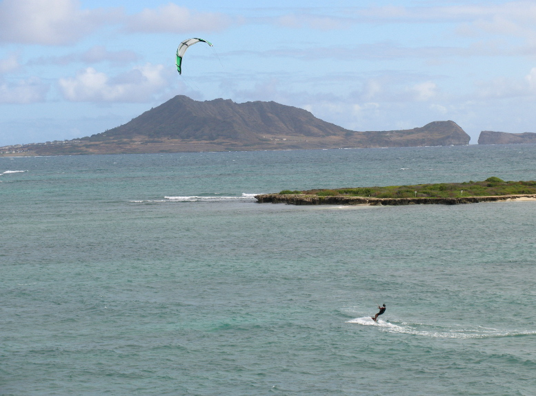

| Home / Dive Resorts / Live-Aboards / Snorkeling / Who We Are / Book a Trip |
©
Copyright U.S. Dive Travel Network.
TROPICAL TRAVEL TIPS: GRAB the BARGAINS. AVOID the BUMMERS. 17 GOOD RULES
of THUMB to REMEMBER |
 |
1. Always book your air tickets as early as possible , to enhance your chances of securing bulk-fare or consolidator prices. These discount air tickets are in steep demand & normally sell out quite early. A good target for dive tour group leaders on dive resort & live-aboard vacations, is to nail down your deposits on air tickets no later than 220 - 180 days before departure when your trip occurs during a holiday period or a peak demand season. Earlier is always better with dive travel bookings, for all dive resort & live-aboard vacations. When you travel during low season, 90+ days advance purchase most often nets you the prime deal on air tickets. For single dive travelers, couples & small groups, it's most economical to pay in full more than 90 days before departure. Be especially wary of peak-season space crunches, so you don't set your heart on certain dates, then feel defeated when the air seats have vanished into, er, thin air. The busiest air-travel peaks of the dive vacation year are listed here in descending order of client demand:
2. Try to book land
reservations (lodging, diving, side tours) no later than this -- deposits
90 days before departure, final payment 70 days before departure
-- during low seasons. Then during high seasons, get your land deposits
paid no later than 120 days out, & final payments 70 days out, to ensure
the best prices & lodging selection. Remember, in many cases you may
avoid additional service fees by paying your land & air rez in full right
when you book. This holds for most quality dive resort & live-aboard vacations.
3. Communicate clearly with your agent. Specify exactly what you expect to spend & how much travel time you need. Don't be shy about any details. We are here to serve you. Insist that your travel agent hold tightly to your budget guidelines. No USDT staffer ever will pressure you to spend more than you feel is right. We have a big red and yellow sign hanging in our St. Paul office that declares: "Cheap is good!" Please feel free to call us any time for help: 952-953-4124.
Calculate what you believe is the proper dive
vacation budget for you: what's affordable here & now, not what you're
wishing for. Be straight with your dive travel agent, so he or she will
work harder to match your expectations to a "T." Never sidetrack
your dive vacation agent into checking packages you dream about but realistically
cannot afford. Remember we are a buyer's agent. We serve you first, not
the airlines. So play it straight & you will always get better service & better deals.
There's never a reason for you, our valued dive
travel clients, to feel shy about setting your dive resort or liveaboard vacation budget & sticking
to it. Blue-chip or blue-collar -- it doesn't matter much to us. We treat everybody like family around here.
What impresses U.S. Dive Travel
is not carefree spending sprees, but dive vacation clients who are gracious, well-organized
from the start, & who know exactly what they want. It's so much easier
to serve you efficiently & accurately that way. And it's more fun for all of
us. That's really the point here; this whole process should be fun from A to Z, from the dream's inception,
through the planning stages, to relishing the actual adventure itself. Who can put a price on fun?
4. If you're
spending more than $1,500 per person for the dive vacation (land &
air total), U.S. Dive Travel recommends that you
purchase travel insurance, especially to cover loss or theft
of gear, or unavoidable trip cancellation. As a matter of policy, U.S.
Dive Travel never will sell travel insurance for any dive resort or liveaboard vacation.
(To see why not, click
on our "Open Letter to Clients" under the "Facts About U.S.
Dive Travel" hot-link on the Home Page.) However, we're happy to help
you research the market yourselves to find a dependable deal. Please refer
to the "How to Find the Best Travel Insurance" hot-link on
our Home Page.
5. If you
want objective, professionally independent reviews
of dive resorts or live-aboards -- from publications that are NOT beholden to their
advertisers -- we recommend two periodicals above all others -- Undercurrent and Rodale's Scuba Diving magazine (RSD):
6. When you
book wholesale land & air packages, positively
avoid cancellations whenever possible. The penalty fees that
dive resorts, airlines & wholesalers charge are a major hassle. Best
to be sure before you book. Of course, if you have a legitimate family
emergency, as defined by USDT's Terms & Conditions (Click on
"How to Book a Trip" on the Home Page) we'll work with you --
when you're forced to cancel your dive resort or liveaboard vacation for dire reasons completely beyond your control.
7. Be sure to line up all your necessary documentation well in advance of departure. Don't forget to bring: passport, visa if required, diver certification card, DAN or PADI emergency insurance card, driver's license & extra cash. Important note to all parents traveling with minor children: Until a child is 18 years old, U.S. law requires that the child must have a permission slip, signed by each parent, & formally notarized, before leaving the country. For example in a divorce situation, if only one parent is traveling with a minor child, the other parent must sign & notarize a formal permission letter before that child is allowed to leave the U.S. This federal law aims to prevent abductions that stem from gnarly custody battles.
8. Carry
your credit cards, driver's license, certification card & passport
in a concealed pouch beneath your clothing.
Carry your cash or traveler's checks in a waist-band money
belt. Never flash your cash. Don't wear bright, gaudy
jewelry or watches, a surefire magnet for muggers abroad. Always remove your cash
stash from the secret belt in a lavatory or private hotel room -- never
in public view. This is a MUST-DO rule for any smart dive resort or liveaboard vacation.
9. Pack light. For trips of two weeks or less, all you need is one medium-sized duffel-bag or dive bag checked through & one small carry-on pouch the size of a gym bag. Keep the checked-through bag less than 50 lb. to be sure the island hopper airline will take it. Always carry your regulator assembly, your dive computer, eyeglasses & personal essentials with you on the plane.
10. Carry
a list of emergency phone numbers & addresses
(back home) with you. Leave your full itinerary with somebody you trust
here stateside, as a conscientious backup to your dive resort or liveaboard vacation.
11. For extended
expedition-style trips, when you reach the main city of your host country,
check in with the U.S. Consulate to
alert them to your travel plans, especially the dates & places you'll
visit. They're an invaluable backup to any dive resort or liveaboard trip.
12. Please NEVER mess with any form of drugs overseas. You are risking your life & freedom for a worthless, empty moment of escape. Police & courts in Third World destinations, such as Singapore, can be ruthless with drug abusers. The U.S. Customs Service will come down on you like a ton of bricks if you try smuggling. And you will deserve every iota of grief that comes your way. Taking chances with drug use is simply the most destructive & idiotic thing any dive traveler can do, anywhere. You are putting your health (on scuba) & your future on the line for a few meaningless puffs or tablets. Why wreck a perfectly excellent dive resort or liveaboard vacation with such a moronic moment? If you need to bring prescription medicines into another country, better to be safe than sorry. Make sure you have duplicate copies of a doctor's signed authorization letter plus the formal prescription sheet to show customs officials. End of sermon. Heed it.
13. Bring
a wad of small bills ($5, $10, $20)
for tips & hurry-up purchases. U.S. currency is welcomed anywhere in
the Americas, & in many other countries too. Fun little factoid: $2 bills from the USA are
legal tender of course, anywhere in the Americas, but folks in lesser-developed nations almost
never see them. So $2 bills make great tips, since they are not only a day's wages for many workers around the world, but they also are a curiosity piece that invariable triggers friendly smiles. We have used this simple little trick on many dive resort & liveaboard vacations. Works like a charm!
14. Consult USDT's comprehensive
dive travel checklists for the many details that make a trip
safe & easy. These are little items you might overlook; but they can
prove to be important if you're ever in a pickle overseas. (See "How
to Book a Trip" on the Home Page.)
15. Make
sure you have at least three months of cardio-vascular
conditioning & athletic stretching under your belt before
the trip, so you have the vim to handle strong currents or possible diving
emergencies underwater or at the surface in heavy waves. A good foundation
of exercise, along with proper sleep, good hydration & prudent use
of alcohol, will greatly reduce your chances of decompression sickness.
If you are a heavy smoker, or if you have had open-heart surgery, or if you suffer from
serious diabetes, asthma or panic disorder, better not even think of scuba diving.
You are playing Russian Roulette with your life. Get your MD's informed opinion first before investing in any serious dive resort or liveaboard vacation.
16. Bring
a few small gifts to help grease the
skids when you need to thank a foreign friend, or to ingratiate yourself
with officials overseas. Pens, hard candy, gum, color postcards from your
hometown, cheap digital watches & tape cassettes are excellent socio-political
lubricants & are universally appreciated. Also bring small hard-to-get
items that are cheap stateside but dear abroad, such as medicines, toiletries,
compact snacks (dried fruits & nuts), books & film.
17. Get a
good guidebook before you leave the
U.S. to learn more about customs, climate, currency, cuisine & such.
We do recommend the Lonely Planet series of travel guides. They are
non-pedantic, non-patronizing, frequently, though not always, accurate
& generally quite respectful to all cultures. Best of luck in planning, & enjoying, your
dive resort or liveaboard vacation.
Phone us any time in St. Paul at: 952-953-4124.
Our E-Mail address is: divetrip@bitstream.net .
Our mailing address is:
U.S. Dive Travel, PMB 307 / Suite #116
15050 Cedar Ave. South
St. Paul, MN, U.S.A. 55124-7047.
Thanks for cruising & perusing our website.
We look forward to hearing from you.
Blessings & Good Cheer!
Susan Hessburg & John Hessburg
Managers, Founding Partners
U.S. Dive Travel Network
© Copyright U.S. Dive Travel Network.
| Home / Dive Resorts / Live-Aboards / Snorkeling / Who We Are / Book a Trip |